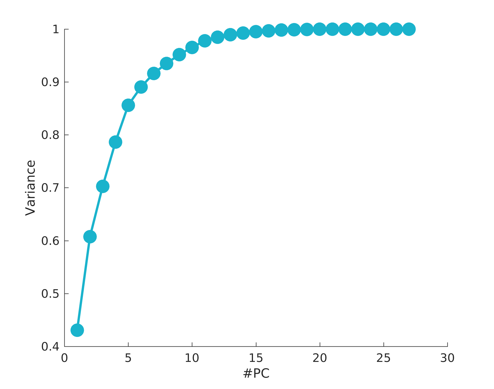
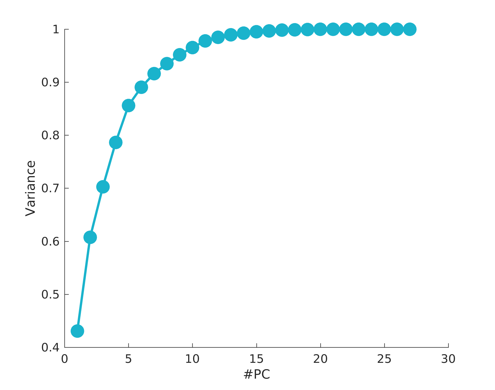

Human Activity Recognition
Human activity recognition (HAR) is a fast-growing field in human-computer interaction. It consists in automaticaly recognizing common human activities in real-life settings. Here we focus on sensor-based HAR, in which data from multiple body-worn inertial sensors such as accelerometers and gyroscopes is used to detect and classify human activities.
PAMAP2 Dataset
The PAMAP2 dataset used for this project comes from the Department of Augmented Vision of the German Research Center for Artificial Intelligence. It consists of over 10 hours of recordings of 18 different physical activities (such as walking, cycling, playing soccer, etc.), performed by 9 subjects wearing 3 inertial measurement units and a heart rate monitor.
The sensors used for this dataset were 3 Colibri wireless inertial measurement units (IMU), positioned in the wrist, chest and ankle. Each IMU comprises one temperature sensor, one 3D-accelerometer, one 3D-gyroscope sensor and one 3D-magnetometer.
The following two publications further describe the dataset:
A Preliminary Analysis
For a preliminary analysis, we'll focus on only two activities: running and cycling. Let's first inspect the measured signals in time. The plot below shows the traces recorded by each sensor (accelerometer, gyroscope and magnetometer) during running and cycling. Each plot shows three traces, corresponding to the three spatial axes.

As we can see, the recorded traces show specific patterns that are quite differmt according with the activity. We''' exploit these patterns to distinguish the activity.
Let's now see the structure of the data in the 'state-space'. The plot below shows all the datapoints for the gyroscope sensor.
 We see how the data for the two activities form clusters in space. They are clearly not linearly separable.

We see how the data for the two activities form clusters in space. They are clearly not linearly separable.

Support Vector Machine
What sensor is the most useful to distinguish runing vs cycling? To answe this question, we can train SVM's to classify each sensor data separately and compare their performance. In the figure below, we plot the classification error for each sensor (accelerometer, gyroscope and magnetometer) in each body position (hand, chest and ankle).The SVM's were trained... Cros-validation was perform 10fold and....
This analysis let us conclude that the optimal choice to distinguish running versus cycling is to use an accelerometer in the hand. This is a lucky result, given that there's where sport watches are worn. So, we can use this method to automatically detect whether a user is running or cycling and correcly label the activity when we save it in our activity tracker database.
Future work
Human activity recognition is an extremely promising field. With the fast development of new wearable sensors, the amount of data is increasing exponentially. This has to come together with algorithms to effeciently decode information from this data. In this project, I intend to find out what are the best algorithms and the best sensors to classify human activity. This include: distinguising multiple activities, ... Moreover, the solution has to be robust between different individuals so that ...